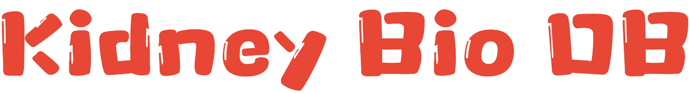

{% block bhead %} {% endblock %}
{% block bstyle %} {% endblock %}
{% block bheader %}

HTMLPAGE.CN
Send
An integrative multi-omics database on kidney disease
{% endblock %} {% block bContentMain %}{% endblock %} {% block bFooter %}
© Copyright 2024 - All Rights Reserved
{% endblock %}
{% block bscrpt %} {% endblock %}